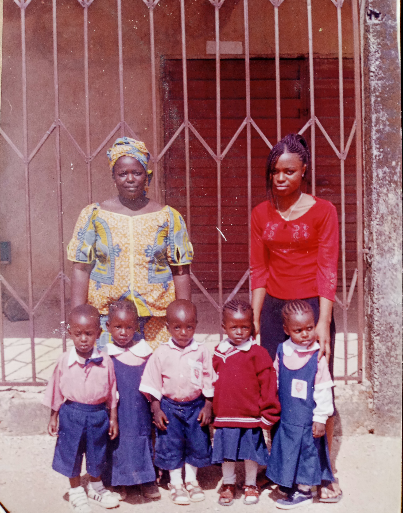
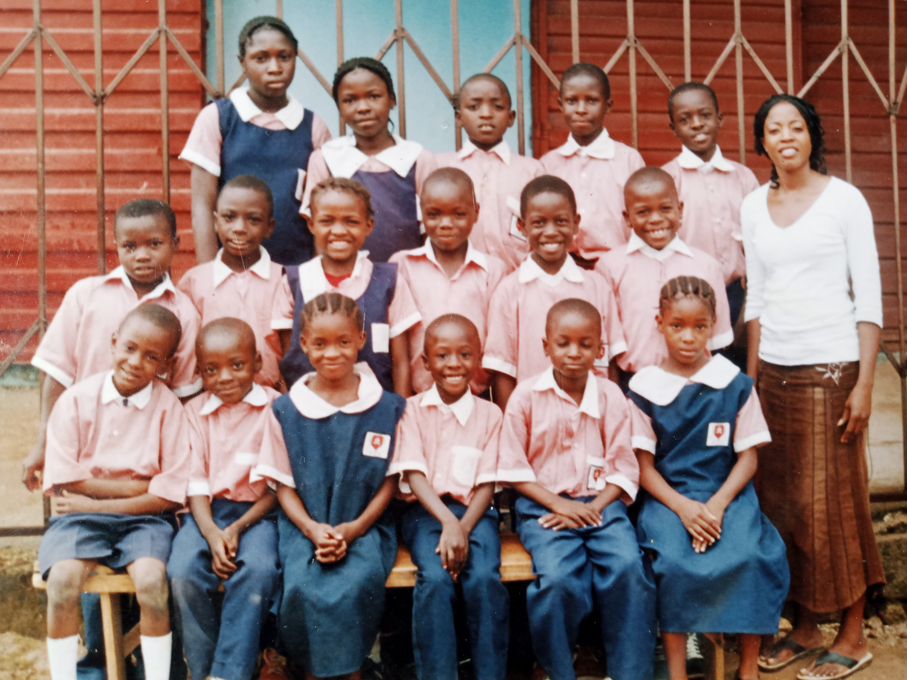
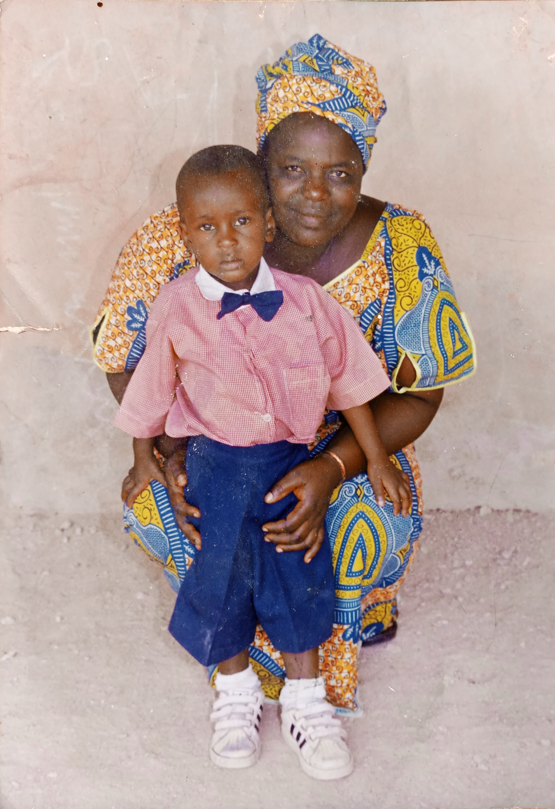
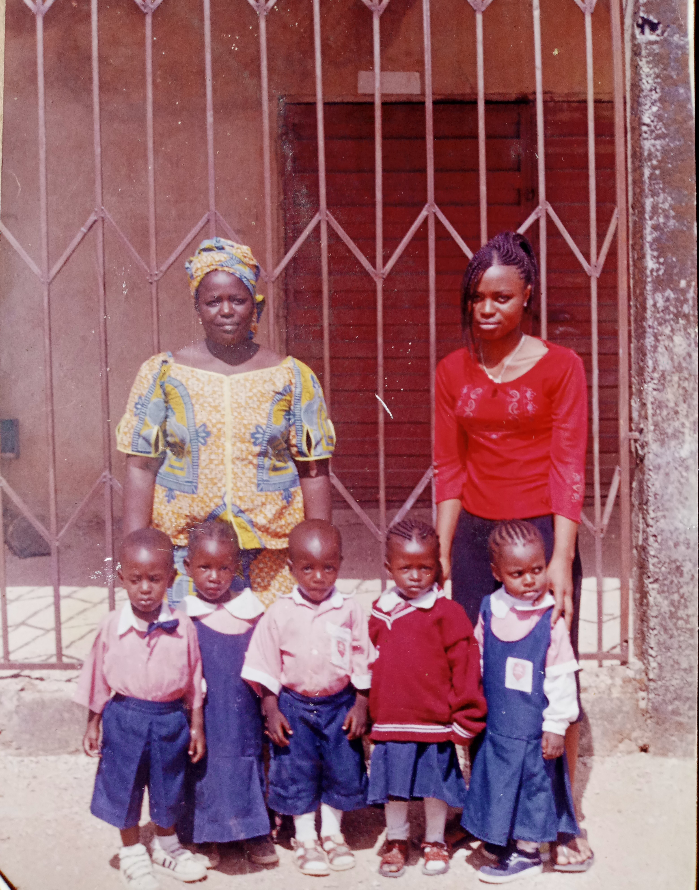
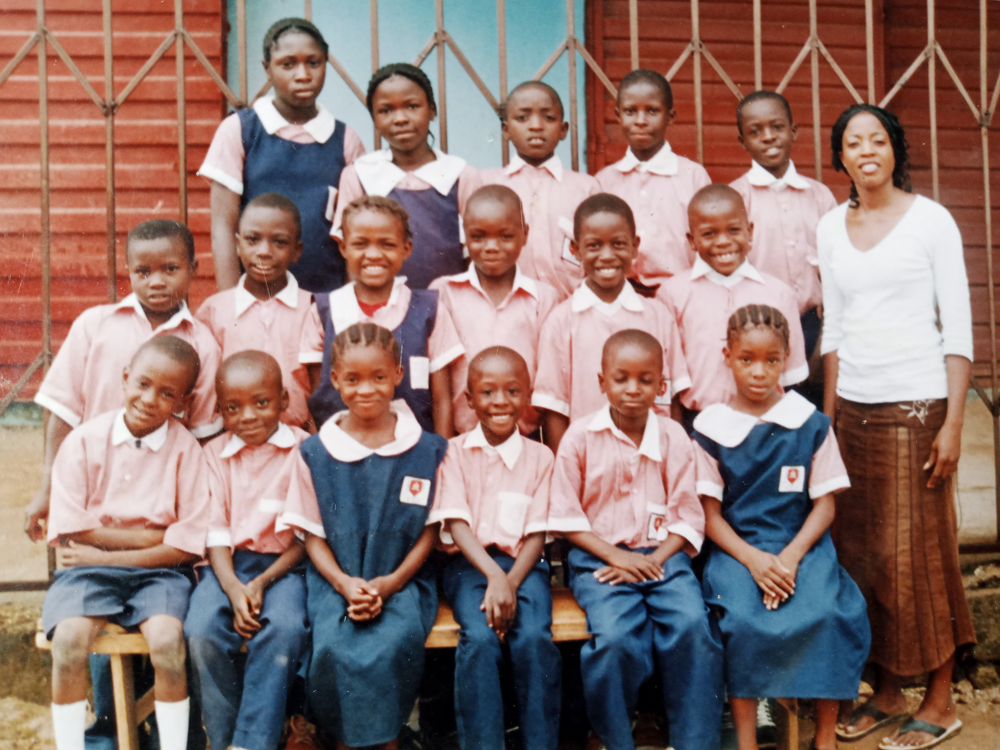
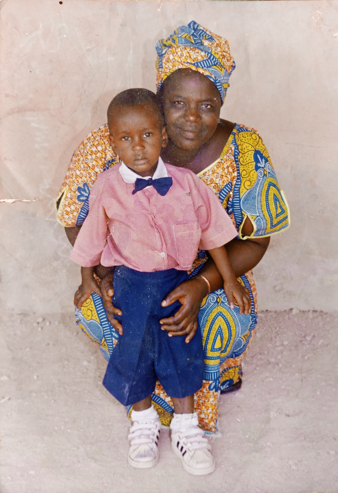

Introduction
This is a brief history of the Godiah Family consists basically of the immediately family. Three surviving children and parents. Five (5) distinct individuals.
The information provided bellow is arranged from the eldest to the youngest as at the year 2023 which these data recordings began. Therefore we have these as our "first generation"
Parents

- Mr Godiah Ibrahim Yakubson
- Mrs Godiah Toyin Aina
Children
- David Godiah Ibrahim
- Jonathan Godiah Ibrahim
- Israel Godiah Ibrahim
Family Biography
Table of content
- Introduction & Early History
- Education
- Career & Achievements
- Personal Stories
- Legacy & Impact
- Media- (images & videos)
Mr Godiah Ibrahim Yakubson
Mrs Godiah Toyin Aina
David Godiah Ibrahim
LIFE<
David Godiah Ibrahim Ayomide Loncat, the First surviving child born into the Godiah family. Born in Plateau State Hospital, Jos on 15th May 1997.
Childhood and youth
Being the first surviving child of the family, also born at a time were both parents jobs barely left room for full day child up bringing, he was kept in good care of trusted nannies. He started school early and grew up fast.
Early Education
Being old enough to start schooling, he was enrolled at COCIN Academy Primary school. The church primary school were both parents fellowshiped. He was eventually transferred to King's Kiddies Private Primary School (KKS). He finished primary education there...graduated and he gained admission into ECWA Staff School Jos farin gada and started JSS1.
Secondary Education
After gaining admission into ECWA Staff Secondary School Jos farin gada being 10 years old in JSS1, it was a boarding school, it was not particularly easy to settle at the time, due to bullies, the struggle of water and every other challenge. He settled anyway, got use to the system and it didn't stop him from doing great academically as he was always a brilliant student... he got even much better as he got into senior class. By the time he was in SS1, Jonathan (his immediate younger brother) joined him at ESSJ, and in SS3 Israel also joined them both. David always looked after his younger brothers in school and stood up for them when needed. He belonged to Yellow house (Ari) and he was a member of set 2013.
Tertiary Education
After graduating from secondary and also passing WAEC at his first sitting, he gained admission into Federal University Of Technology Minna (FUT minna), to study Computer Science. Being far away from home for the first time alone, he settled with a family of Mr Godiah's friend, (Umar). After a year he eventually moved out and lived like every other student. He once had accident nearly fatal, survived with so many bruises. This affected his academic semester as it took quite a long time to recover. He did his Internship Training (IT) in Jos, and successfully graduated and had his convocation in February 2019. He finished from FUT Minna with a very decent 2nd class upper. He served his country in the NYSC program in Jos for the stipulated time and finished successfully.
Jonathan Godiah Ibrahim
LIFE
Jonathan Godiah Ibrahim Seyi Manji, the second son born into the Godiah family. Born in Eldin Specialist Hospital on 4th January 1999.
Childhood and youth
Being the latest introduction to the family at that time with David being barely almost two years old. Growing up was not so rapid with a lot of health challenges which he later overcame while growing up. He was naturally quiet and reserved even as a child, walking and speech come much later as growth took place.
Early Education
He started early basic education at COCIN Academy just like David before also transferring to King's Kiddies Private Primary School (KKS) for better educational standards. Picked up well and did better and graduated. He gained admission into ECWA Staff School Miango
Secondary Education
At 10 yrs old he went off to ECWA Staff School Miango to begin JSS1. It was a boarding house, settling went well but there was a challenge of distance and clashing of events with ECWA Staff farin gada Jos such as, visiting days, resumptions, P.T.A meetings etc. (David was in ECWA Staff farin gada Jos)
After completing JSS1 in Miango he had to transfer to ECWA Staff farin gada Jos for convenience which meant he had to restart from JSS1 again. He settled easily with already having experience and an elder brother for assistance (David). He belonged to Green house (shelly) and was a king just before graduating. He was a member of set 2016. He graduated 2nd July 2016.
Tertiary Education
After graduating from ECWA Staff it took a couple of years before he gained admission into University Of Jos Nigeria to study Mechanical Engineering. Due to so many reasons like Corona Virus outbreak in 2020 and the Jos crisis and ASSU strike there were many delays in the academic sessions from the beginning. He was matriculated and started 100 level (first year) in 2019.
Israel Godiah Ibrahim
LIFE
Israel Godiah Ibrahim Oluwasanjo Fwangshak, the last child born into the Godiah family. Born in Jos University Teaching Hospital [JUTH] on 20th February 2003.
Childhood and youth
At the time Israel was born the family of Godiah already had two sons (David & Jonathan). He grew quite rapidly being able to walk before age two. Due to the nature of the parents occupations and "young" elder siblings at that time, he was looked after by his aunt (Kyuata). There was quite a gathering of celebration after his birth, family and friends of the family were present after the child dedication.
Early Education
Just a couple of months after turning one year old, Israel was strong enough to enroll at King's Kiddies Primary Private School (KKS), started from the basic right through finish in Primary.He was always punctual also winning most Punctual Pupil (thanks to his dad always dropping him off early on his way to work). Israel was sportive always loved football precisely from that young age. In primary 5 he wrote the common entrance exam for ECWA Staff Secondary School with intentions to meet up with his elder brothers who were already enrolled at that time. At just age 9, Israel had already finish KKS and graduated ready to go to JSS1 even though it was suggested he stay another year at home due to he age but he refused and was ready to stat JSS1 at age 9 ( in a boarding school).
 





Secondary Education
After gaining admission into ECWA Staff Secondary School Jos farin gada at just 9 years old in JSS1, speculations arise from the school board which suggested he was too young for the challenges, but all later passed away. Israel settled down rather easily thanks to his elder brothers, David at the time already being a senior student made life easier. Israel also began struggling academically compared to the excellent grades from primary school days.
In senior class he began to pick up and settle more academically, he belonged to Yellow house (Ari) which he was a prince twice before graduating. He was a member of set 2018. Graduated 14th July 2018. at just age 15 being one of the youngest in the set.
Tertiary Education
After graduating from ECWA Staff it took over two years before he gained admission into University Of Jos Nigeria to study Industrial Chemistry. Due to so many reasons like Corona Virus outbreak in 2020 and the Jos crisis and ASSU strike it was until September 2022 he finally got matriculated and started 100 level (first year).